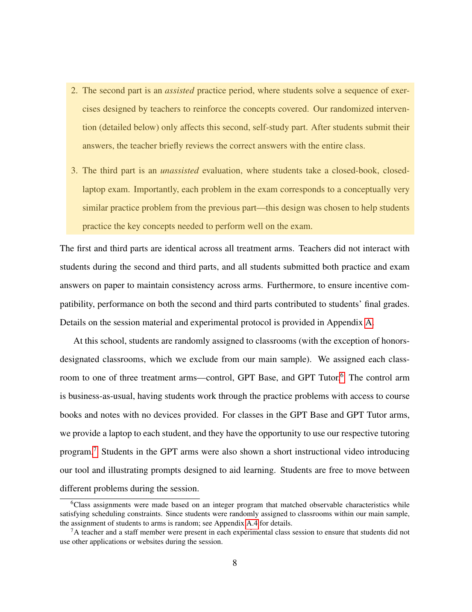

Process-based assessment
⌘K
Library
All sources
Bastani et al. 2025
Kapur 2008
Bassner et al. 2026
Zotero
AI tutoring
Transfer
Research
RQ1
Which behaviors predict learning transfer?
Writing
Notes on transfer measures
Method outline
Sources
Bastani et al. 2025 · Methods
Kapur 2008 · Method
Files
telemetry_week1.csv
IDETrace_export.parquet
codebook.md
Try
Import from Zotero
Connect Overleaf
Connect GitHub
Which behaviors predict learning transfer?
Suggested places to start
1
How have prior studies measured transfer?
Kapur 2008 · Method
Struggle first, then tested on new problems
Bastani et al. 2025 · Methods
Practice with AI, then an exam without it
Bassner et al. 2026 · Study
Performance and learning, measured separately
2
Which student behaviors does your data capture?
3
What outcome would show transfer?
Stage
Terminal
Bastani et al. 2025
×

8 of 68
−
100%
+